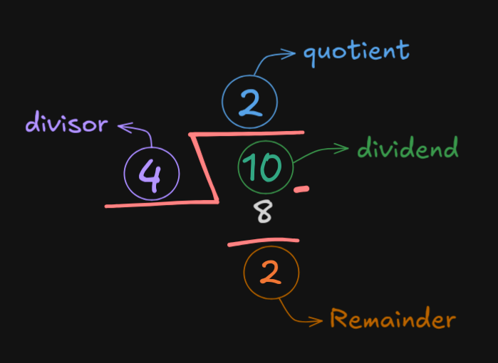

Modular arithmetic is a system of arithmetic where numbers "wrap around" after reaching a certain value, called the modulus. It’s often described as "clock arithmetic" because, like a clock, after you reach the maximum value, you go back to 0.
"Modulo 5" for example means we are working with numbers in a system where everything wraps around after 5 — like a clock with 5 hours.

In modulo 5, 10 for example is equivalent to 0. In more technical terms, 10 is congruent to 0.
Let a be any integer and b be a positive integer, then, there exists unique integers q (quotient) and r (remainder) such that a=bq+r where 0≤r≤b
The Floor Function is a mathematical function that takes a number and rounds it down to the nearest integer.
q = ⌊a/b⌋, r = a-bq
If a = 10, b = 4 and we're trying to divide a by b, the direct result of this division is 2.5. However, the quotient is q = ⌊a/b⌋ which is 2, and the remainder is r = a-bq which is r = 10-(4*2) = 2
a div b asks about the quotient that results from a/b
a mod b asks about the remainder that results from a/b
If b divides a, then the remainder r when a/b is 0.
"b divides a" is denoted as b|a
For example, 4 divides 8.